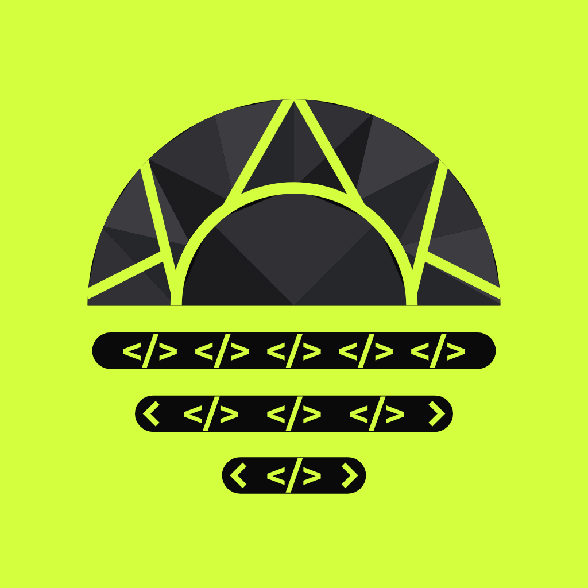
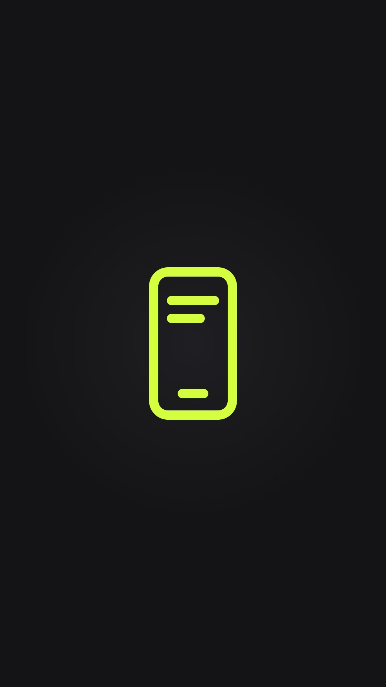
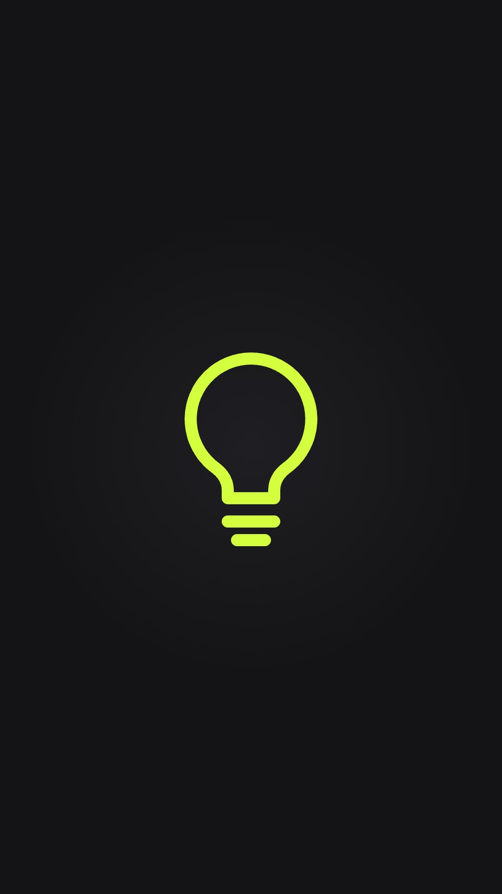
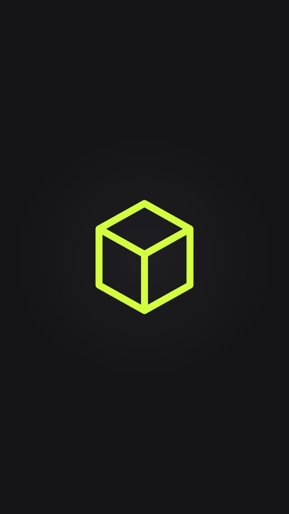
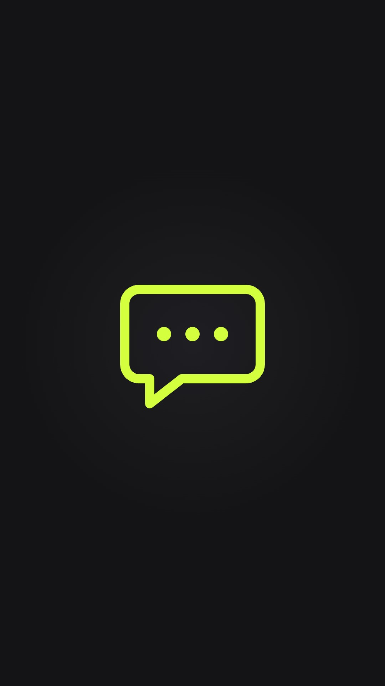
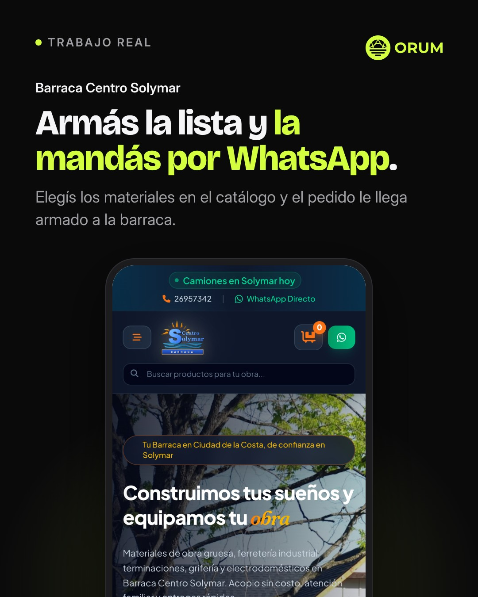
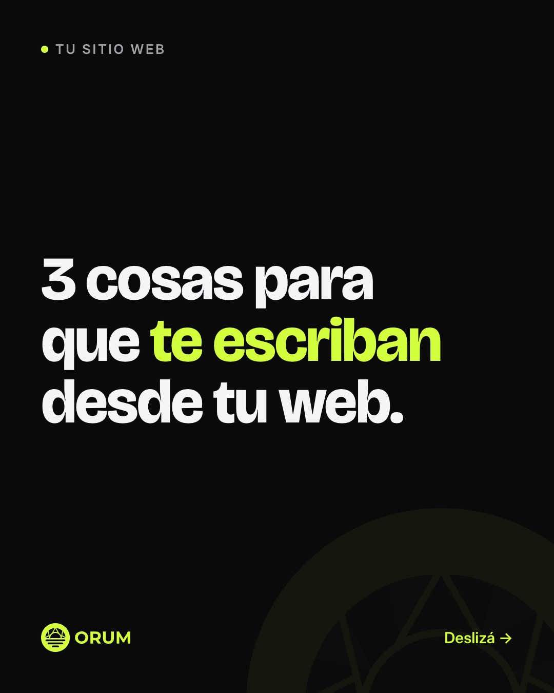
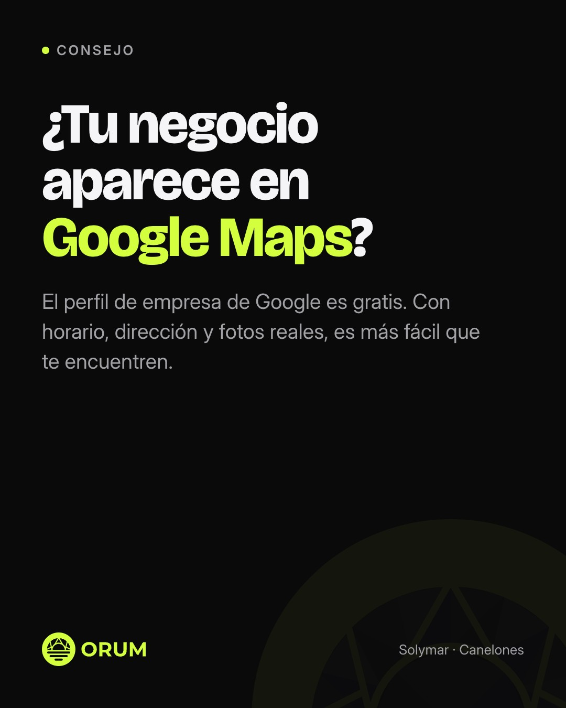
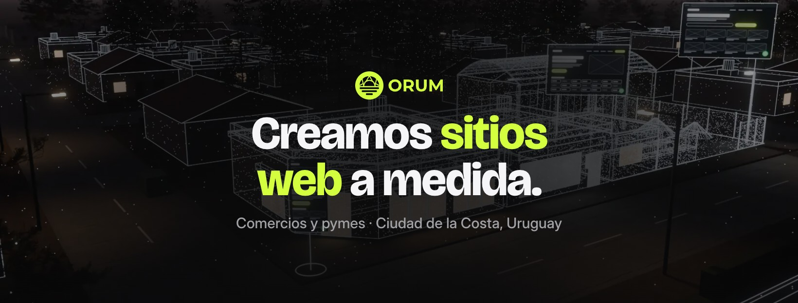

orum.uy
ORUM · Sitios web a medida
Diseñador de sitios web
Sitios web para comercios y pymes de la Costa. Hablás directo conmigo, de principio a fin. Escribime por WhatsApp 👇
🔗 wa.me/59891541848








ORUM
Sitios web a medida para comercios y pymes de la Costa. Solymar, Canelones.
Aproximado: cada app acomoda la foto y la portada a su manera.